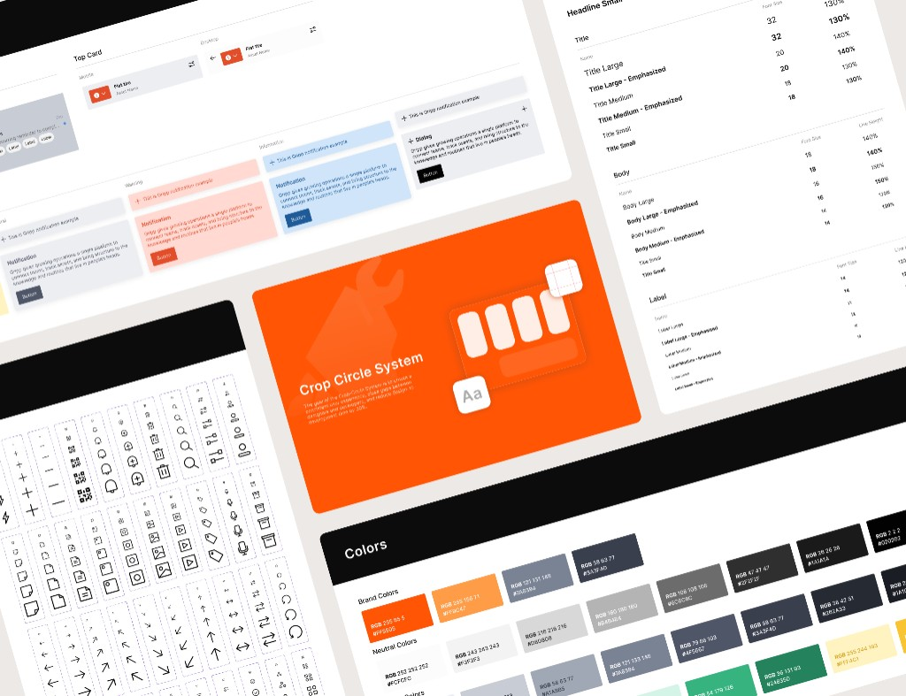

Crop Circle System
Rebuilding the design system for UI consistency
At Gripp, we moved quickly in our early stages, but now that the product has stabilized, we’re refreshing the UI and rebuilding our design system to strengthen consistency across the team and the product.
Team
- Sole Product Designer (Me)
- 1 Product Manager
- 2 Engineers
Engineer & Designer Workload
~ 30%
QA-Related Issues
~ 40%
Problem
Gripp's design system hadn't been updated for over a year.
When I first joined Gripp, the design system hadn’t been updated for over a year, and there were many backlog features that still needed exploration and design. Because of that, the design system kept getting pushed back even further.
- 1. Before the new designer joined, I audited all past work myself. The outdated, unclear design system caused major inconsistencies and couldn’t keep up with new features.
- 2. Without a unified component library, developers rebuilt the same components in different ways, creating extra work and inconsistency.
- 3. With all the issues above, the team spent significant time fixing QA bugs. And the bugs we missed led to an inconsistent experience for our users.
Solution
The new design system cuts designer/developer workload by 30% and reduces QA inconsistency fixes by 40%.
After launching the new design system and Storybook for engineers, designers saved over 30% of the time previously spent adjusting differences, while engineers saved time rebuilding components. Overall, we reduced the time spent on QA after launch by more than 40%.
HEURISTIC EVALUATION
Gripp’s earlier design lacked a cohesive system, resulting in visual heaviness and fragmented information hierarchy.
With the new designer onboard, we conducted heuristic evaluations together to uncover design and usability issues in the current product. We first evaluated separately, then compared our findings to identify matches and gaps. Here are the main problems we found:

DESIGN DIRECTION
As a result, we redesigned the interface with a new visual and UX approach focused on clarity, hierarchy, and reduced cognitive load.
To address the issues above, we revisited the design and, considering timeline, business, and marketing constraints, rebranded our visual identity and introduced a new UI approach to create a cleaner, more professional yet friendly experience, while improving consistency, scalability, and usability.

Design Process
Given our time constraints, we built components using atomic design alongside the key page refresh.
We followed the Atomic Design methodology by Brad Frost. We started by defining base tokens for particles (typography, colors, spacing), then created Atoms as the smallest UI components. These were combined into Molecules, Organisms, and finally Pages.

Ideation - Sitemap and Flow Chart
With the key pages and components set, I applied them across all pages and edge cases, refining as needed to maintain consistency and scalability.
I shared research results with business partners, product managers, and engineers to propose ideas together, ensuring both user needs and technical feasibility were met.

DESIGN SYSTEM
With Figma Variants, we reduced design inconsistencies and scaled components predictably.
Components in Figma were fully configurable using variants and properties, allowing designers to work within the same constraints and think in terms of systems rather than individual screens. This significantly reduced inconsistency, duplicated work, and design drift as the team scaled.
Additionally, all components were designed to scale predictably across viewports and were mapped directly to their implemented counterparts in Storybook.

Storybook
With Storybook, we not only reduced developer workload by over 25%, but also lowered QA bugs.
To reduce gaps between designers and engineers—and across engineering teams—we aligned design and implementation through Storybook. While Figma defined design intent and constraints, Storybook became the single source of truth for real component behavior. All components were designed to scale predictably across viewports and mapped directly to implemented components in Storybook. This reduced ambiguity during handoff, minimized back-and-forth questions, and helped engineers across teams implement UI consistently without reinterpreting design decisions.
Color and Spacing Consideration
About 30% of our users are older adults, and many of them experience age-related vision issues such as presbyopia.
From user observation, we learned that many users rely on iOS system font settings. Instead of using fixed font sizes, our layouts adapt to iOS Dynamic Type categories. When Accessibility Text Sizes are enabled, the interface automatically shifts to a high-readability layout for a more comfortable reading experience.

Dark Mode
80% of our users are farmers working in the fields, while the remaining 20% work in factories as mechanics.
After completing accessibility checks, we added more Figma variables, including dark-mode colors. Pre-validating accessibility made it easier to ensure the dark-mode palette also meets AA standards.